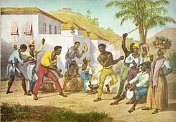
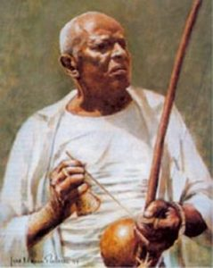

Histoire
La capoeira
Un art martial afro-brésilien, à la fois jeu, lutte, danse et musique, né de la résistance des esclaves africains déportés au Brésil.

La capoeira est un art martial afro-brésilien qui puise ses racines dans la culture, les méthodes de combat et les danses des esclaves africains déportés au Brésil à partir du XVIe siècle.
Elle se distingue des autres arts martiaux par son côté ludique, stratégique et acrobatique. Pendant le combat, que l'on appelle aussi le jeu, on attaque surtout avec les jambes, même si les mains, la tête, les genoux et les coudes peuvent servir. Les « joueurs » peuvent prendre appui ou se mettre en équilibre sur les mains pour lancer des coups de pied ou des acrobaties.
De formes diverses, la capoeira se joue ou se lutte à différentes hauteurs par rapport au sol et à différentes vitesses, sur le rythme des instruments et des chants.
Un art de résistance
La capoeira exprimerait une forme de rébellion contre la société esclavagiste. Les premiers capoeiristes se seraient entraînés à lutter en cachant leur art martial sous l'apparence d'un jeu : quand les maîtres colons approchaient, la musique et les chants déguisaient le caractère martial, et le combat se transformait aussitôt en une sorte de danse agile. Elle trompait leur méfiance et les empêchait de voir le caractère belliqueux de la capoeira, qu'ils prenaient pour une autre brincadeira d'esclaves (en portugais : jeu, divertissement).
Elle aurait aussi été pratiquée dans les quilombos, refuges secrets d'esclaves en fuite, installés dans des endroits peu accessibles pour échapper à leurs tortionnaires. Le plus connu, le Quilombo dos Palmares, a tenu plus d'un siècle et a inspiré de nombreux chants ; son représentant le plus célèbre, Zumbi dos Palmares, est l'une des figures de la résistance des esclaves africains.
La capoeira serait également une forme de langage corporel. Les premiers esclaves, qui parlaient des langues différentes et appartenaient à des cultures différentes, l'auraient créée, volontairement ou non, comme un moyen de communiquer entre ethnies. Ce sont les explications les plus souvent avancées. De nombreux historiens ont cherché à établir les circonstances de sa naissance, mais il semble impossible de le faire de manière formelle et tangible.
On ne connaît pas non plus précisément l'origine du mot « capoeira », que plusieurs théories tentent d'expliquer. Il pourrait venir de la langue des Indiens tupi-guarani et signifier « clairière » ou « herbe rase » : les esclaves en fuite auraient souvent été aperçus en train de s'entraîner dans ce type de lieu, pour se défendre des maîtres qui voulaient les reprendre.
Mestre Bimba et la capoeira Regional

Au début du XXe siècle, la capoeira gagne en popularité, se démocratise et gagne en respectabilité. Elle est soutenue par de nombreux artistes, penseurs et hommes publics brésiliens, qui commencent à envisager d'en faire l'une des manifestations populaires et culturelles du Brésil.
Dans les années 1930, Manuel dos Reis Machado, plus connu sous le nom de Mestre Bimba, fonde la première école de capoeira, le « Centro de Cultura Física e Capoeira Regional », à Salvador de Bahia. Il crée le style que l'on appelle la « capoeira Regional ».
C'est une nouveauté : à l'époque, la capoeira ne s'apprend que dans la rue et sur le moment. S'entraîner dans une salle, avec des exercices codifiés (dont les fameuses huit séquences de Mestre Bimba), préfigure les multiples académies qui se créeront ensuite.
La capoeira Regional se distingue de la capoeira traditionnelle : Mestre Bimba y intègre des éléments du batuque, une lutte africaine que pratiquait son père, ainsi que des éléments venus d'arts martiaux étrangers. Il veut aussi redorer l'image de la capoeira en la dissociant du banditisme et de la délinquance de la société brésilienne de l'époque. Il n'accepte donc dans son académie que des personnes pouvant justifier d'un travail ou d'un statut honnête. La première génération d'élèves est ainsi composée en majorité de jeunes Blancs aisés, de bonne famille, ce qui était alors une forme de respectabilité.
En 1952, il parvient à attirer l'attention du président brésilien Getúlio Vargas et lui fait une démonstration, à la suite de laquelle le président déclare que la capoeira est le « véritable sport national ».
Mestre Pastinha et la capoeira Angola
À contre-pied de Mestre Bimba, Vicente Ferreira Pastinha, connu sous le nom de Mestre Pastinha, incarne le courant qui souhaite préserver, dans une certaine mesure, la capoeira traditionnelle : ce sera la « capoeira Angola ».
Ces évènements ont permis à la capoeira de sortir de la clandestinité et de s'affirmer comme l'une des activités sportives les plus pratiquées au Brésil, avec le football, le volley-ball et le jiu-jitsu brésilien.
La capoeira de nos jours
Avec l'essor de la capoeira, de nombreux groupes sont apparus au Brésil. Vers 1970, l'un d'eux a créé un système de cordes, sur le modèle des ceintures de couleur des arts martiaux asiatiques.
Les couleurs des cordes ne sont pourtant pas les mêmes d'un groupe à l'autre : chacun a son propre classement. Le plus souvent, la première corde est blanche, symbole de pureté pour celui à qui l'on doit tout apprendre. Elle est parfois vert clair, comme un fruit qui n'a pas encore atteint sa maturité. Dans certains groupes, au contraire, la corde blanche est celle des maîtres eux-mêmes.
Les années 1980 et le renouveau des mouvements de conscience noire ont favorisé l'apparition de groupes cherchant à se rapprocher de la tradition. À la même époque, des professeurs de capoeira se sont installés un peu partout dans le monde.
Au niveau international, la capoeira est surtout organisée en groupes, eux-mêmes composés d'académies et d'écoles. Chaque groupe a ses propres aspirations, pratiques et coutumes, tout en conservant la base culturelle commune de la discipline. À Rennes, Capoeira Bom Sinal fait partie du Grupo Capoeira Brasil.